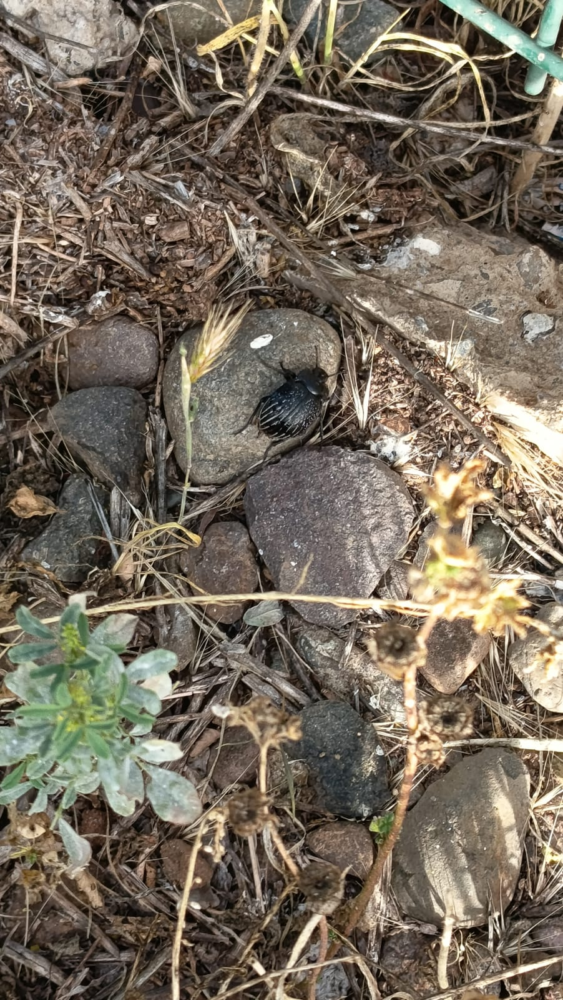

Ficha de especie
Vaquita del desierto
Foto del insecto

- Nombre común
- Vaquita del desierto
- Nombre científico
- Gyriosomus angustus
- Orden
- Coleoptera
- Familia
- Tenebrionidae
Ver másVer menos
- Tamaño
- Mide aproximadamente 18 mm de largo (1,8 cm).
- Hábitat
- Sectores pedregosos, paleodunas y planicies costeras de Paposo, Región de Antofagasta.
Qué hace en el ambiente
Ayuda al ecosistema del desierto al participar en el ciclo de la materia y los nutrientes, alimentándose de materia vegetal.
Qué come
Es herbívora, por lo que se alimenta principalmente de materia vegetal disponible en su hábitat.
Ciclo de vida
Como escarabajo, pasa por huevo → larva → pupa → adulto.
Dato curioso
Sus élitros (alas delanteras endurecidas) tienen seis franjas blancas. Además, no posee alas posteriores funcionales para volar.
Amenazas
Sus principales amenazas son la pérdida y transformación de su hábitat, el pastoreo de cabras, la extracción de leña y el aumento de los incendios.
Cómo protegerlo
- Proteger su hábitat natural.
- Evitar la extracción de leña.
- Controlar el pastoreo de ganado en las zonas donde vive.
- Evitar incendios y la destrucción del terreno.
- Respetar las áreas naturales donde habita.